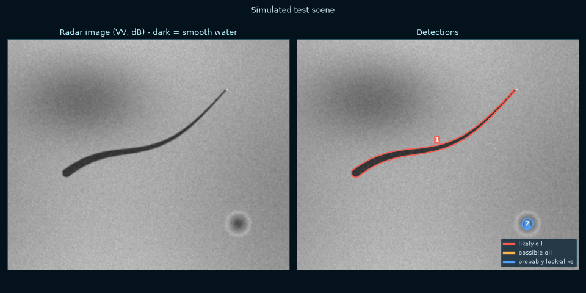
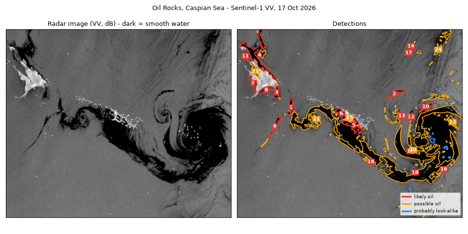

The problem
On 25 May 2025 the container ship MSC ELSA 3 sank about 14 nautical miles off Alappuzha, Kerala, with around 84 tonnes of diesel and 367 tonnes of fuel oil on board. It was monsoon season. Normal satellite photos were mostly cloud, so the Coast Guard had to send aircraft to look for the slick.
Big accidents are only part of it. A lot of oil at sea comes from ships illegally washing out their tanks, often at night and far from shore, where nobody sees it.
Oil kills fish, birds and coral. It shuts down fishing for weeks, and coastal fishing families are hit first. Clean coastal water is part of water security.
Our question: can a student team find oil spills using only free satellite data and a laptop?
How a radar satellite sees oil
Sentinel-1 (run by ESA) is a radar satellite. It sends microwaves down at a slant and measures the echo. It makes its own signal, so it works at night and through clouds.
Wind makes small ripples on the sea, a few centimetres long. Those ripples scatter the radar back to the satellite, so normal sea looks grey.
Oil makes a thin film that flattens those ripples. Smooth water acts like a mirror and bounces the beam away. Almost no echo comes back, so oil looks dark.
Benjamin Franklin noticed the same thing in 1773, when a spoonful of oil calmed the ripples on a whole windy pond in London.
Try it
This runs the detection right here in your browser (nothing is uploaded anywhere). Use our simulated test scene, or upload a Sentinel-1 VV image as a GeoTIFF (how to get one).
Settings
No image loaded yet.
What the program does
- Gets the image. The full version downloads Sentinel-1 VV images from ESA's Copernicus Data Space for any area and date (free account).
- Masks land, plus 1 km of coast, because coasts and mudflats cause false alarms. (full version only)
- Removes speckle. Radar images are grainy. A Lee filter smooths the sea but keeps edges sharp.
- Compares every pixel with the sea around it (average over about 3 km). Wind changes across an image, so one fixed threshold doesn't work.
- Marks dark pixels: at least 3 dB darker than the surroundings, and darker than -18 dB.
- Second pass. A big slick is wider than the 3 km window, so it counts itself as "normal sea" and only its edges get marked. So we work out the background again, leaving out the dark pixels from the first pass. Now the middle of big slicks gets found too.
- Joins them into patches and drops tiny ones.
- Scores each patch with simple rules taken from oil spill research:
4 or more = likely oil, 2–3 = possible, less = probably a look-alike.very dark vs sea (≥6 dB / ≥4 dB) +2 / +1 long and thin, like a ship's trail (length ÷ width ≥3 / ≥1.8) +2 / +1 sharp edges +1 fuzzy edges (calm wind fades out slowly) −1 covers more than ¼ of the sea in the image (that's weather) −3 whole sea very calm (below −22 dB) −1
We used rules instead of AI on purpose: we can explain every single decision, and it works without thousands of labelled training images.
Testing
1. Simulated scene
We made a fake radar image where we know exactly where the oil is: a ship with a curved oil trail, a big calm-wind patch and a rain cell, plus realistic speckle noise.

2. Real satellite images
Oil Rocks, Caspian Sea. Old oil platforms here leak all the time. We ran 6 real Sentinel-1 images from Oct 2026 and the program found "likely oil" on every one. On 17 Oct there was a huge swirling slick around the platforms:

Testing on real data also found two bugs that the fake scene never showed:
- The land map we use counts the Caspian Sea as land, so at first the program hid the whole sea and found nothing. Now, if the map says "all land" but the radar is dark like water, we trust the radar.
- Big slicks only had their edges marked. The second pass (above) fixed that.
Kerch Strait, Black Sea (Dec 2024). This one was harder. On 18 and 19 Dec we can see thin dark streaks, but they are only 1-2 dB darker than the sea (oil is usually 3-10 dB), and a lot of the oil was right on the Anapa coast, inside the strip we ignore. The program flagged only small "possible" patches. If we lowered the threshold to catch the streaks, it gave 20-50 false alarms on 30 Dec, when there was no slick, so we kept it strict. We think the heavy fuel oil here mixed into the water instead of making a smooth film.
The full app has presets for these and other places:
| Place | When | What happened |
|---|---|---|
| Off Alappuzha, Kerala | May–Jun 2025 | MSC ELSA 3 sank; ~9 km slick seen by satellite on 1 June |
| Kerch Strait, Black Sea | Dec 2024 | Two tankers broke apart, ~4,000 t of fuel oil; slicks on Sentinel-1 on 18, 19, 29–31 Dec |
| Mauritius | Aug 2020 | MV Wakashio ran aground on a reef and leaked fuel |
| Mumbai High, Gulf of Kutch | any date | India's offshore oil field and oil terminals, for routine checks |
3. Ripple tank
We also built a tabletop model: a fan makes ripples on a tray of water, a laser plays the radar, and a light sensor plays the antenna. A few drops of oil flatten the ripples and the reading drops, the same effect the satellite uses. With the fan off it says "no wind", because calm water fools the real satellite too.
Limits (being honest)
- Calm sea (wind below ~3 m/s), rain cells, natural films from algae, and ship wakes can also look dark. Our rules cut false alarms, but a person should always check what it flags.
- In very strong wind (above ~10–12 m/s) oil gets mixed into the water and can disappear from radar.
- Sentinel-1 passes over each place only every few days, so this is for regular checking, not instant alarms.
- The rules were tuned on a few cases. Next step: train a machine learning model on a labelled dataset and test it on many more spills.
The full app and code
The full version is a Python app running online. You pick any area of sea on a map and a date, it downloads the real Sentinel-1 image from Copernicus, masks land, shows results on the map and exports GeoJSON for Google Earth / QGIS.
Open the full app View the code on GitHub
Getting a Sentinel-1 image yourself
- Make a free account at dataspace.copernicus.eu and open the Copernicus Browser.
- Choose Sentinel-1 GRD (IW mode), pick a date and zoom to a sea area.
- Choose the VV layer, then Download → Analytical → TIFF (32-bit float), WGS84.
- Upload that file in Try it above.
Sources
- Cedre - MSC ELSA 3 incident sheet
- Sentinel-1 analysis of the Kerch Strait spill (2025)
- Zodiatis et al., modelling the Kerch Strait spill, EGU 2025
- Copernicus Data Space - Sentinel-1 GRD documentation
- Brekke & Solberg (2005), Oil spill detection by satellite remote sensing, Remote Sensing of Environment
- Krestenitis et al. (2019), Oil spill identification from satellite images using deep neural networks, Remote Sensing